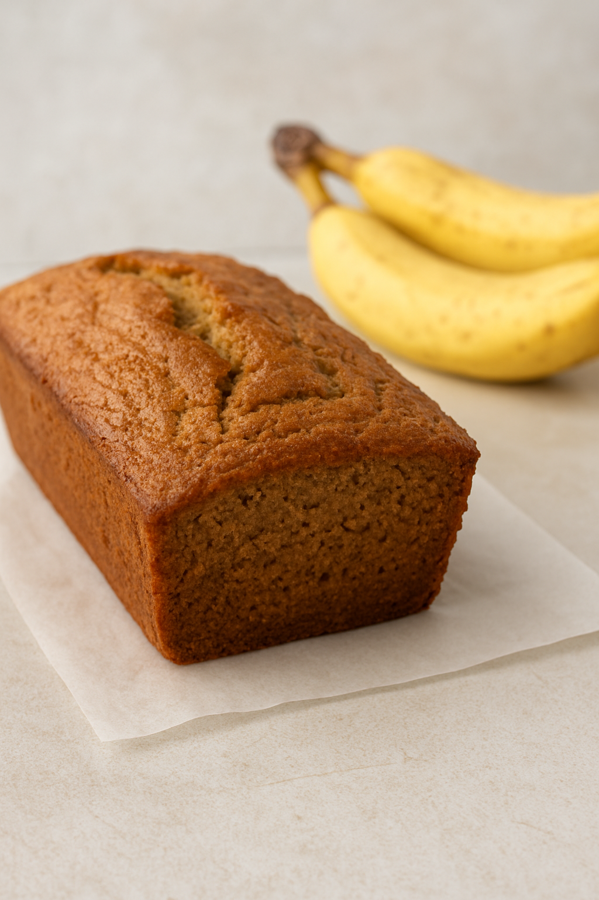

GPT Banana Bread
Home

Description
Here's a classic, moist banana bread recipe that's easy and delicious!
Ingredients
- 3 ripe bananas, mashed
- 1/3 cup (75g) melted butter
- 3/4 cup (150g) sugar (use less for a less sweet loaf)
- 1 egg, beaten
- 1 tsp vanilla extract
- 1 tsp baking soda
- Pinch of salt
- 1 1/2 cups (190g) all-purpose flour
Baking Instructions
- Preheat oven to 350°F (175°C). Grease a 4x8 inch loaf pan.
- In a large mixing bowl, mash the bananas with a fork until smooth.
- Stir in the melted butter.
- Mix in sugar, beaten egg, and vanilla.
- Sprinkle the baking soda and salt over the mixture and stir to combine.
- Add the flour and stir just until incorporated (don't overmix).
- Fold in any optional add-ins if using.
- Pour the batter into the prepared loaf pan.
- Bake for 50–60 minutes, or until a toothpick inserted into the center comes out clean.
- Let cool in the pan for 10 minutes, then transfer to a wire rack.